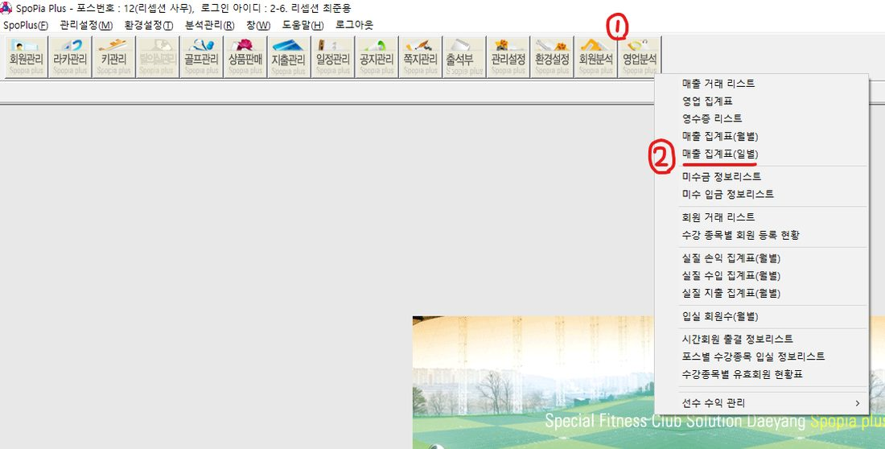
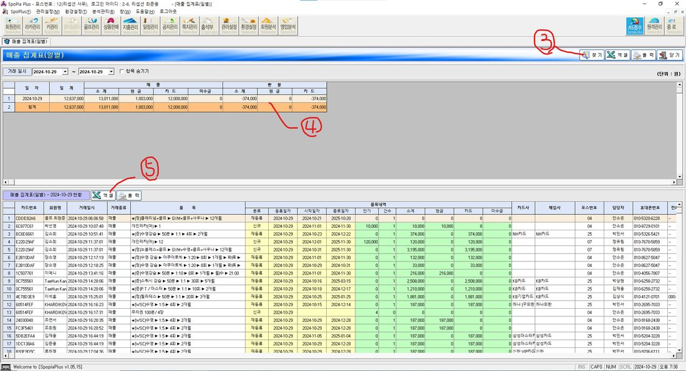
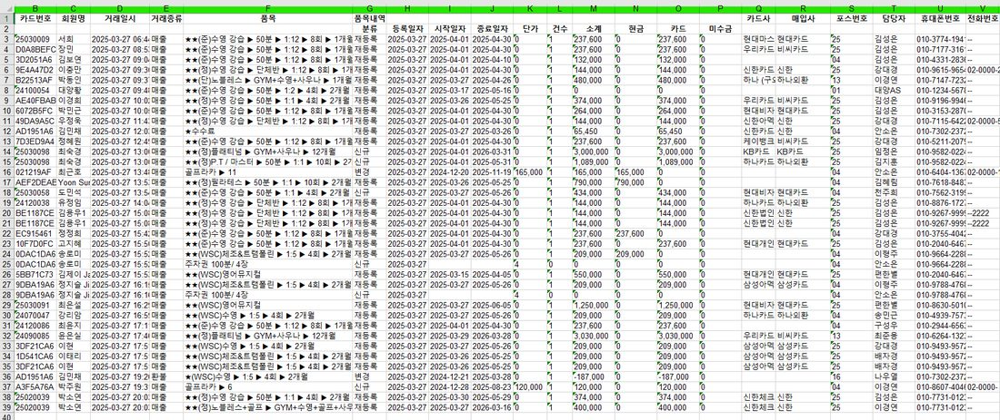
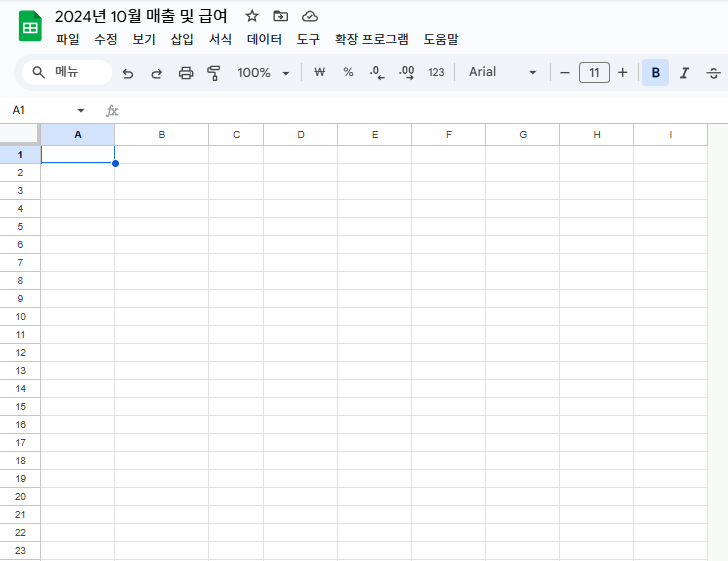
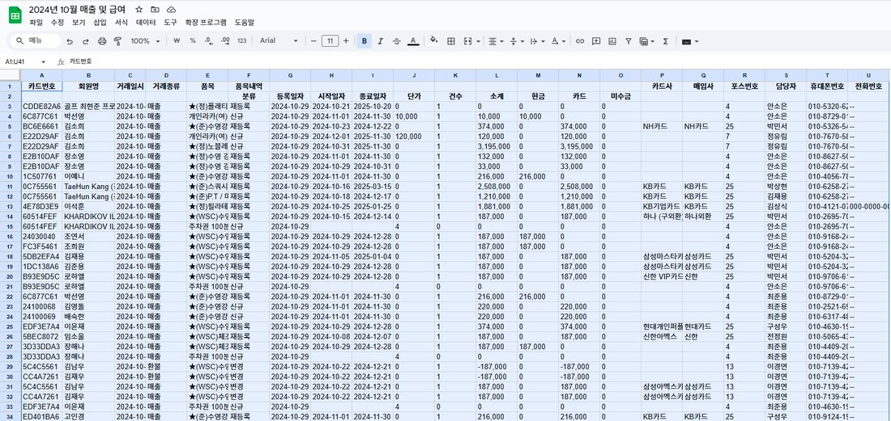
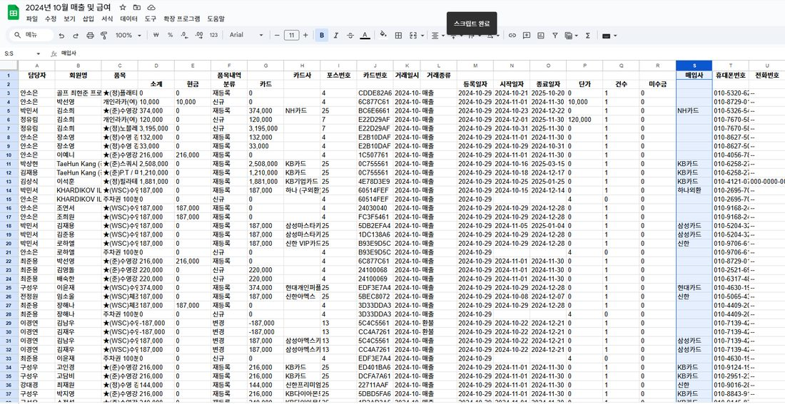
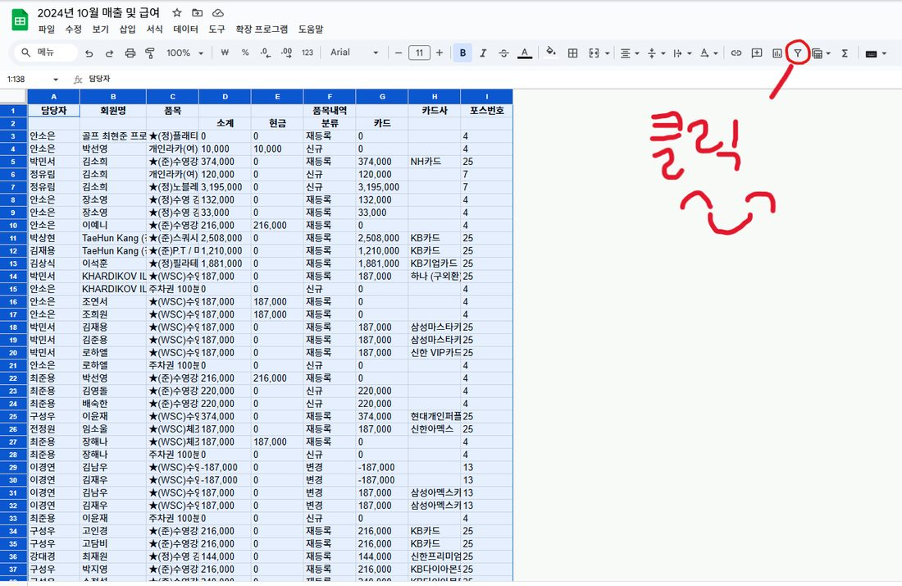
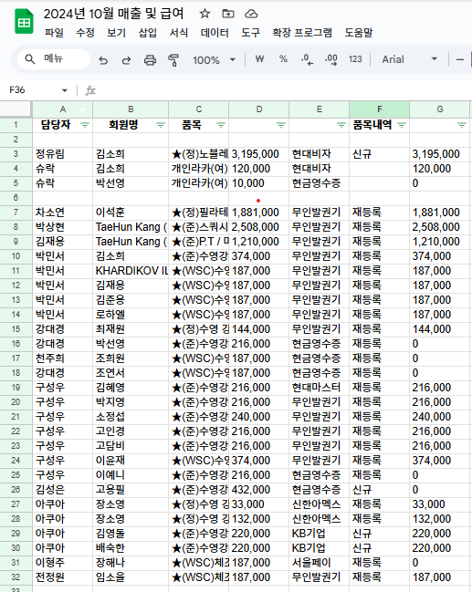
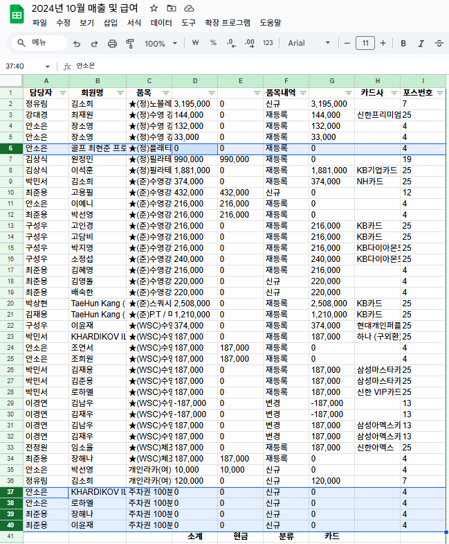
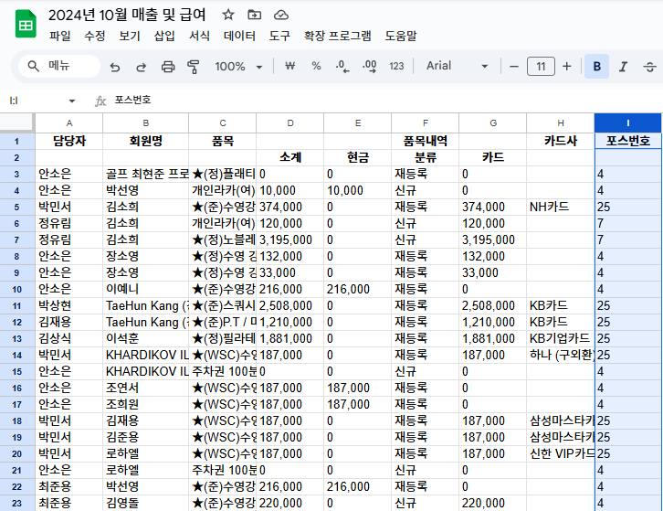
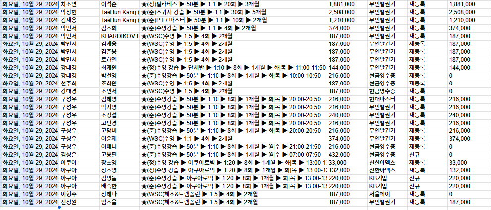
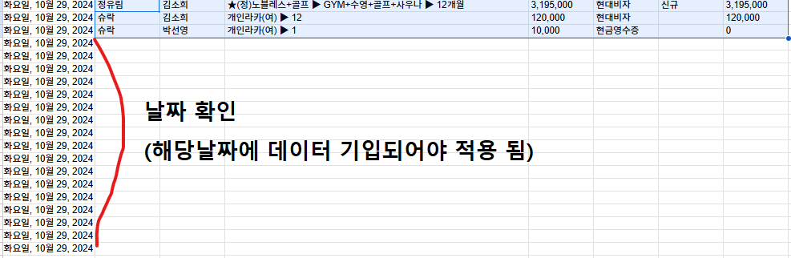
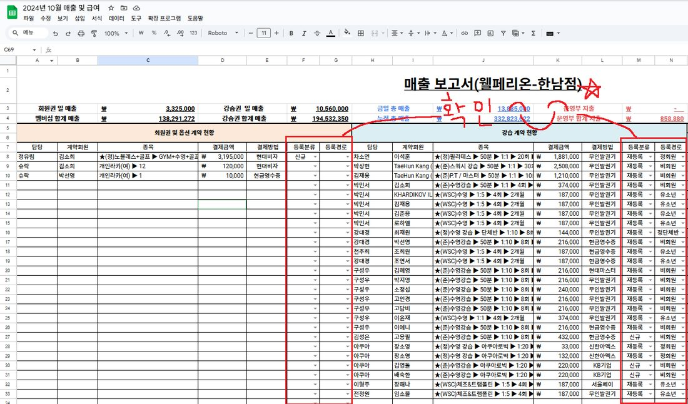
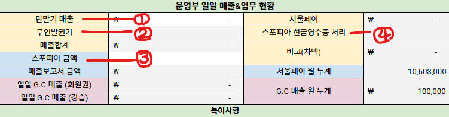
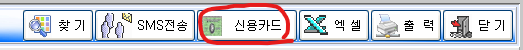
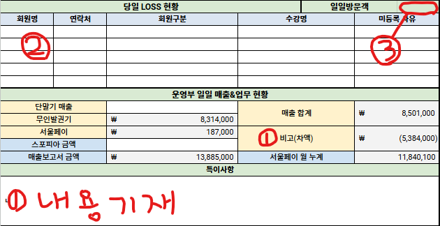
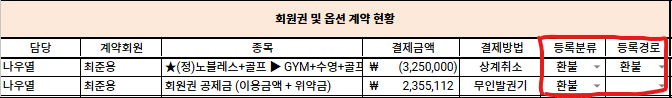
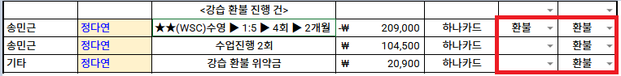
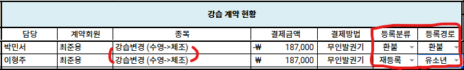
| 열 | 내용 |
|---|---|
| 신청일시 | 회원이 신청한 날짜·시각 (예: 2026. 1. 2 오후 4:38) |
| 성명 / 연락처 | 회원명 · 휴대폰 |
| 휴회 차수 | 1회차 / 2회차 / 3회차 / "○회차연장" |
| 휴회 시작일 / 만료일 | 적용 기간 |
| 휴회 사유 | 여행 · 출장 · 개인사유(개인사정) · 병가 · 수술 등 |
| 특이사항 | 잔여 초과·양도·스포피아 처리·미반영 보정 등 메모 |
| 담당자 | 처리한 리셉션 직원명 |
| 휴회 일수 | 적용 일수 (시작~만료) |
| 진행 상황 | 적용완료 |
| 비고 | "적용완" · "유효x" · "유효,문자x" · "문자 발송 ○/○" 등 |
| 열 | 내용 |
|---|---|
| 날짜 / 회원명 / 연락처 | 방문 회원 |
| 입장사유 | 1.무료체험예약 · 2.일일입장 · 3.카드미소지(수동발권) · 4.회원권 관련 · 5.강습 관련 · 6.기타 · 7.초대권 |
| 성별 / 락커번호 | 발권한 락커 번호 |
| 입장시간 / 담당자 | 발권 시각 · 직원명 |
| 비고 | "수동발권" 명기 (필요 시 "운동시작일 변경" 등 부가 메모) |
| 초대권 NO | 초대권 입장 시에만 |
| 열 | 내용 |
|---|---|
| 날짜 / 담당자(확인) | 처리일 · 직원명 |
| 입금 [회원명·종목·금액] | 종목 예: wsc수영/골프/체조/스쿼시 · 일일입장 · PT · PL · 줌바 · 회원권 · 양도비 · 락카비 · 단기회원권 |
| 출금 [내역·금액] | 주로 "관리부입금"(일 단위 매출 상납) · 환불 등 |
| 잔액 [금액] | 입출 반영 누적 잔액 |
| 비고 | 수표·거스름돈·환불 메모 등 |
| 구분 | 컬럼 |
|---|---|
| 남 / 여 | 키번호 · 날짜 · 분실자 · 결제유무 · 비고 |
| 고장 | 키번호 · 키유무 (남·여 각 옆에 별도 칸) |
| 제안 컬럼(골프/스쿼시 락커) | 비고 |
|---|---|
| 락커 번호 | 입력 대기 |
| 회원명 / 연락처 | 입력 대기 |
| 배정일 / 만기일 | 입력 대기 |
| 상태(이용가능·만기·회수) | 입력 대기 |
| 비고 | 입력 대기 |
| 항목 | 내용 |
|---|---|
| 보관·공지·처분 주기 | 습득한 달 포함 1~2개월 보관·공지 후 처분 (습득월 → 다음 달 공지 → 그다음 달 처분) |
| 처분 방법 | 🟢 소모품(우산·수건·양말)은 처분월에 폐기 / 🟡 일반·🔴 귀중품은 관할 경찰서·LOST112 인계(유실물법) |
| 귀중품 | 현금·지갑·귀금속·전자기기는 접수 즉시 별도 보관 |
| 수령(반환) | 회원이 담당 매니저에게 문의 → 직원 확인 후 현장에서 서명하고 수령. 수령 처리는 직원 화면에서만 |
| 등록 항목 | 습득일 · 품목/특징 · 습득 장소 · 분류(소모품/일반/귀중품) · 사진 · 상태(보관중/수령완료/처분완료) |
| 처분 공지 | 처분 예정 물품은 갤러리에 ⏳ 배지로 표시되고, 종합접수처에서 A3 처분공지 인쇄가 가능합니다 |
※ 위 절차는 GM 검토 후 확정됩니다. 시간·담당·세부 체크포인트는 실무 입력 필요.